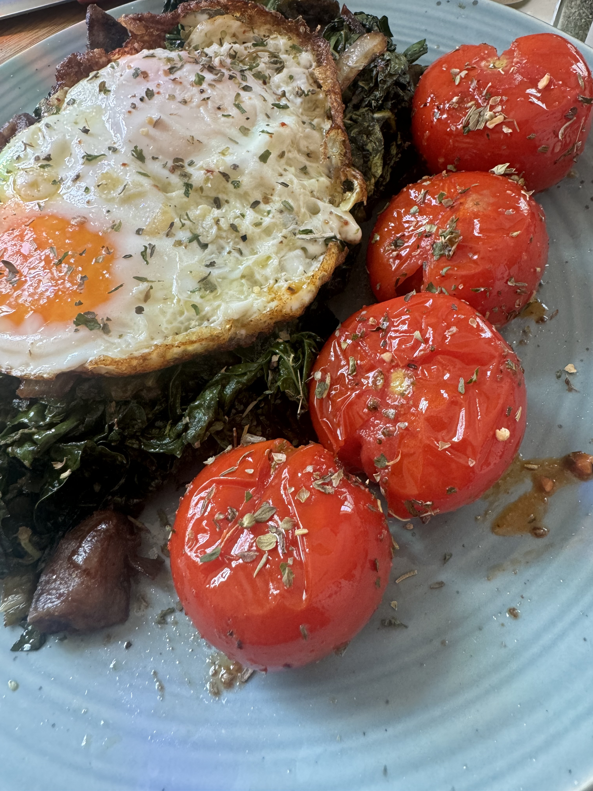

JPC's Tomatoes

Description
A quick and easy side that works alone as a snack or with an entree such as JPC's Potatoes.
Ingredients
- cherry tomatoes
- spices/herbs
- balsamic vinegar
- cheese (optional/of your choosing)
Steps
- rinse tomatoes
- add tomatoes to a preheated skillet with olive oil over medium heat
- as tomatoes simmer add spices/herbs
- as tomatoes begin to blister carefully add a few splashes of balsamic vineger to taste
- remove from heat add more spices/herbs and serve
- enjoy!